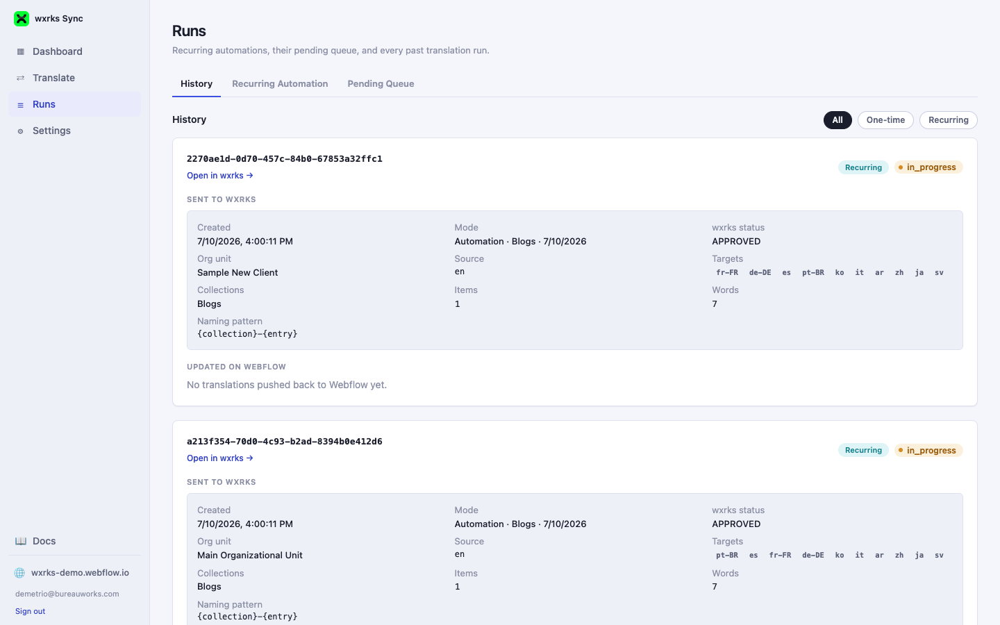

05 · Runs & Automations
The Runs page
Everything that's scheduled, queued, or already happened lives here, organized into three tabs: History, Recurring Automation, and Pending Queue.

History
Every past run, one-time or automation-triggered, with delivery status per item and any errors encountered along the way. Filter by All, One-time, or Recurring using the pills at the top right.
A run's card here is exactly what the Dashboard's "Latest runs" links jump to — following one of those links lands you on this tab, scrolled straight to the matching card.
Recurring Automation
Every automation created from the Send to wxrks wizard's "Recurring pull content automation" option is listed here, with controls to pause, resume, or archive it. Archived automations are hidden by default — a Show archived link appears whenever any exist, so they stay out of the way without being permanently hidden.
Pending Queue
New and edited Webflow content appears here in real time, as Webflow's CMS webhook delivers item-changed events — then runs under whichever automation matches it, on that automation's own schedule. A CMS webhook not registered notice means this account's Webflow webhook needs to be (re-)registered before the queue can populate automatically — the reconnect action is right there when that happens.